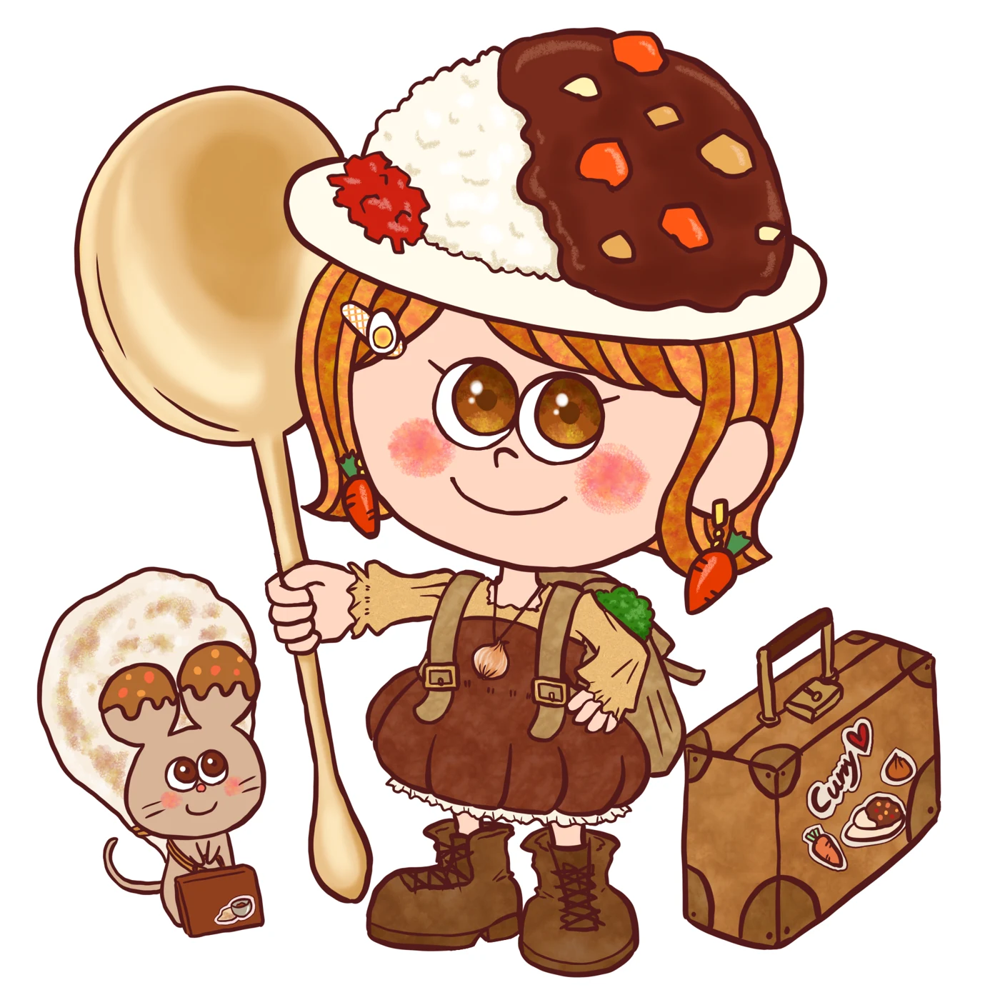
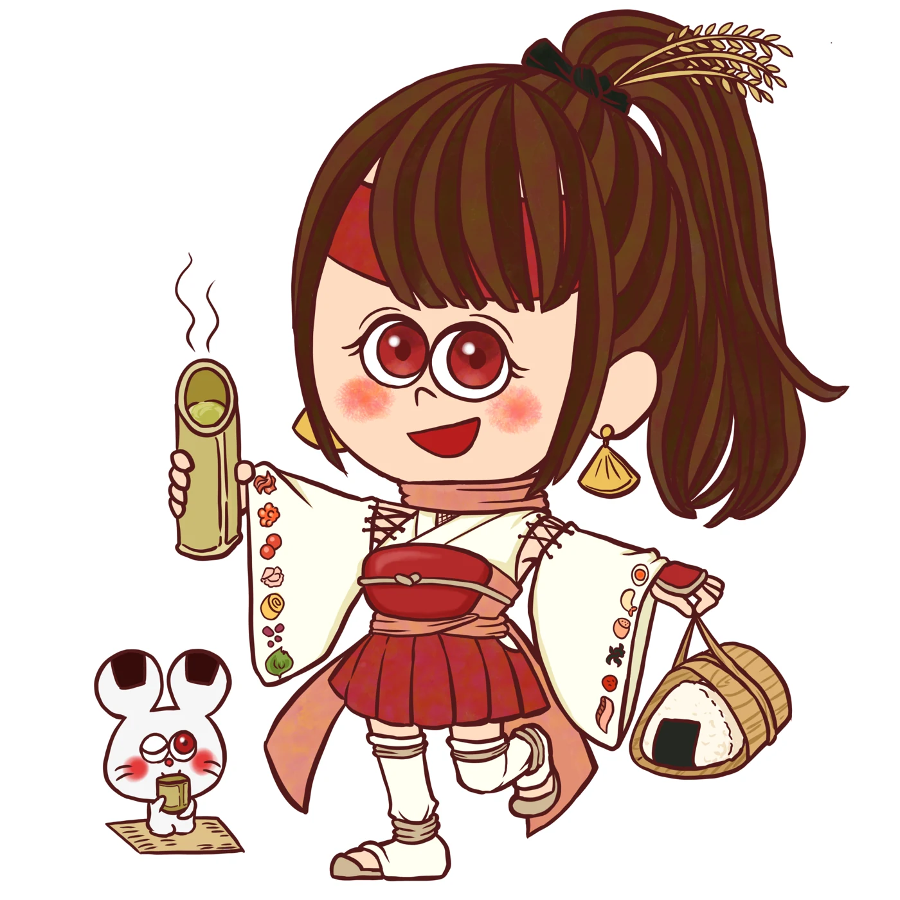
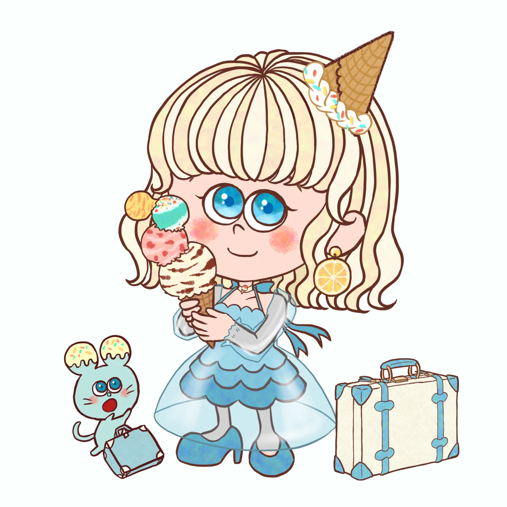
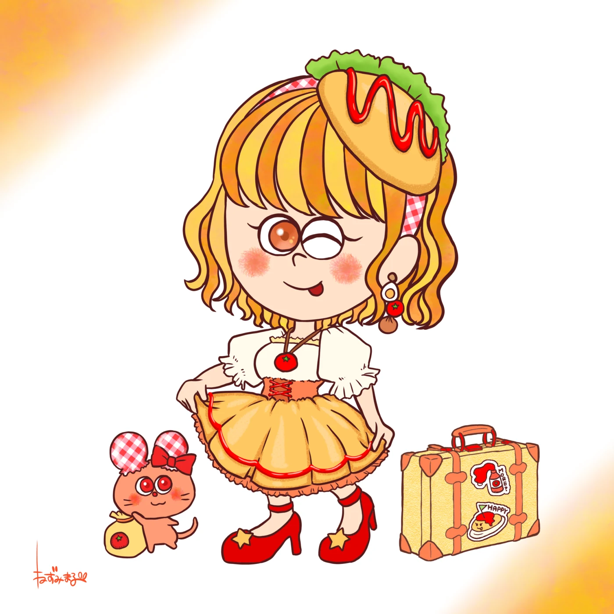
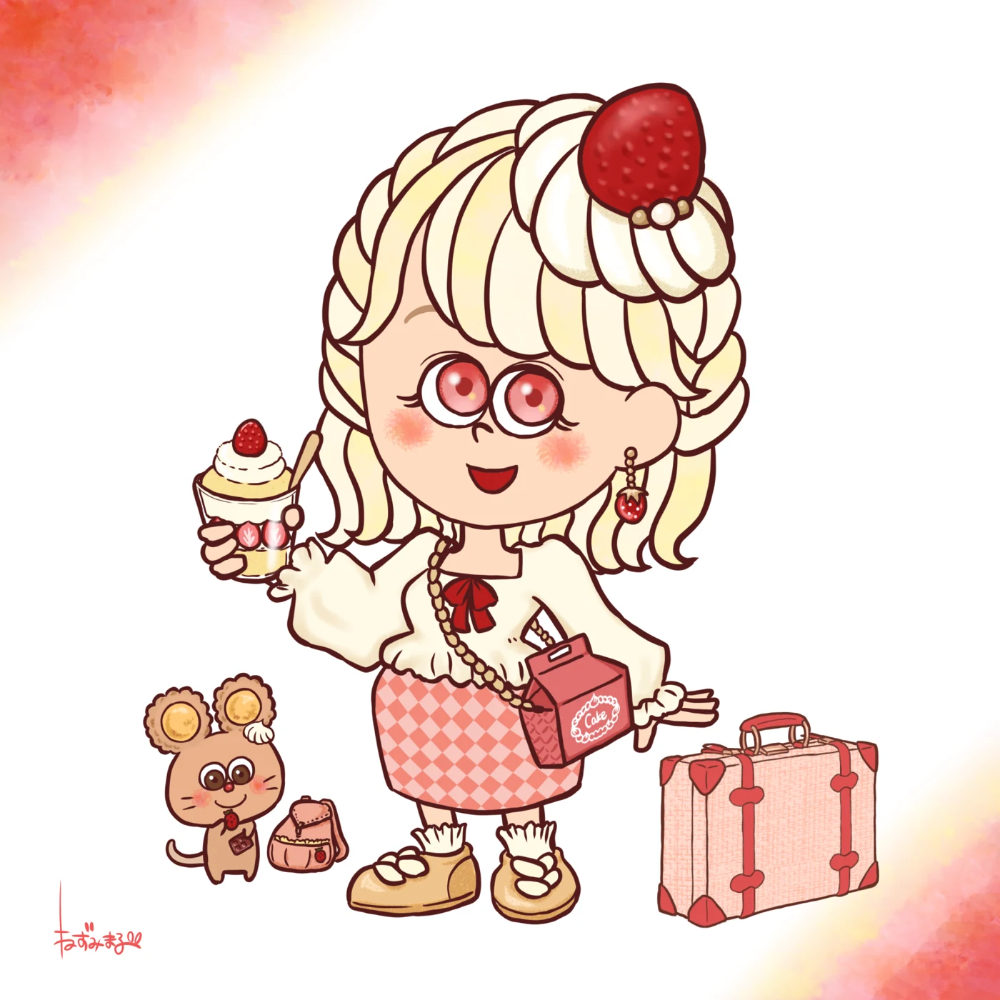
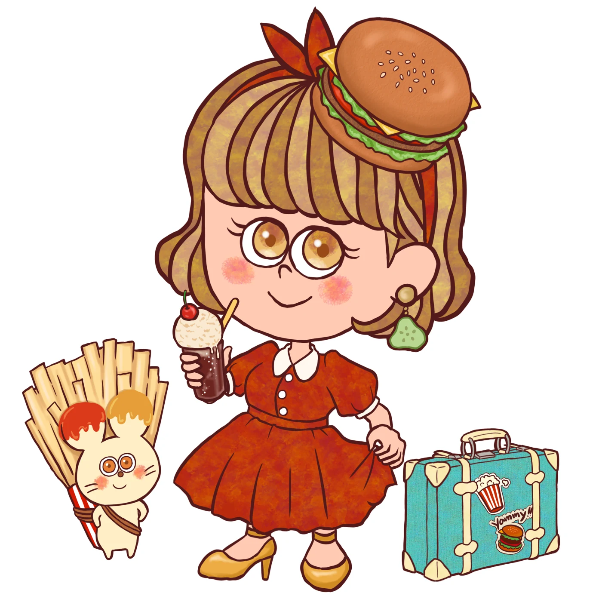
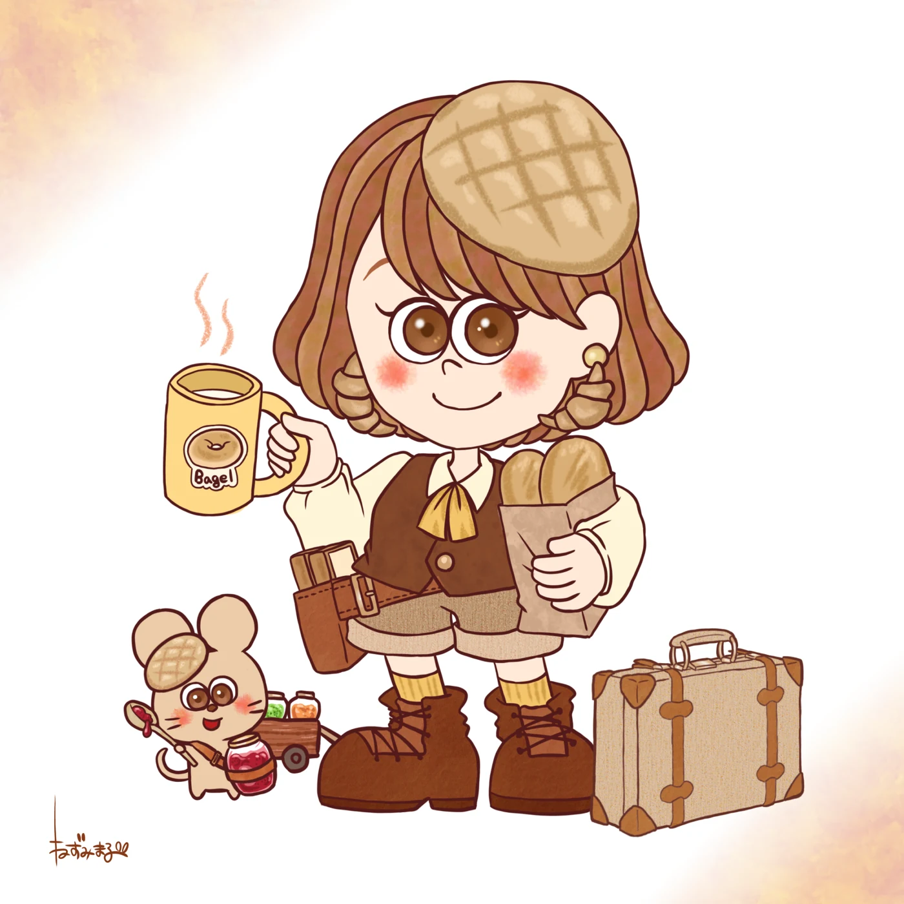
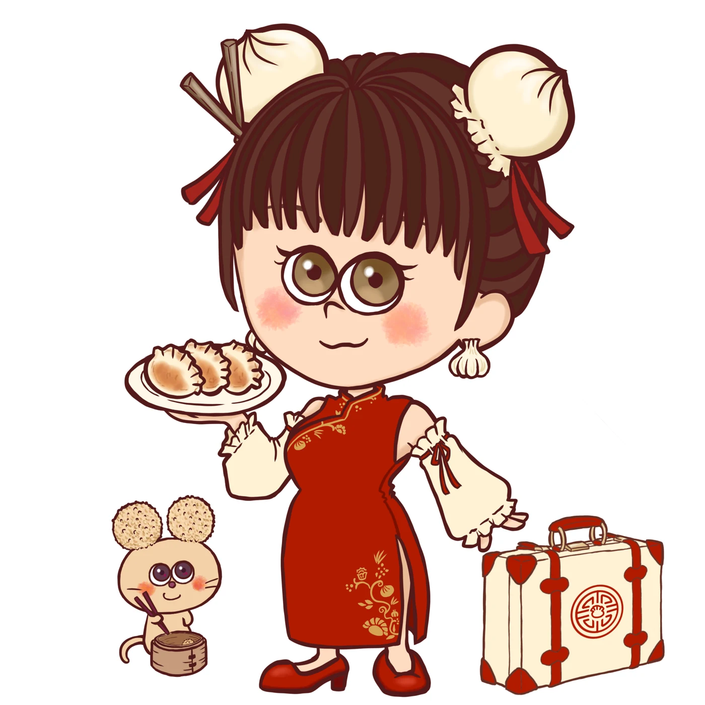
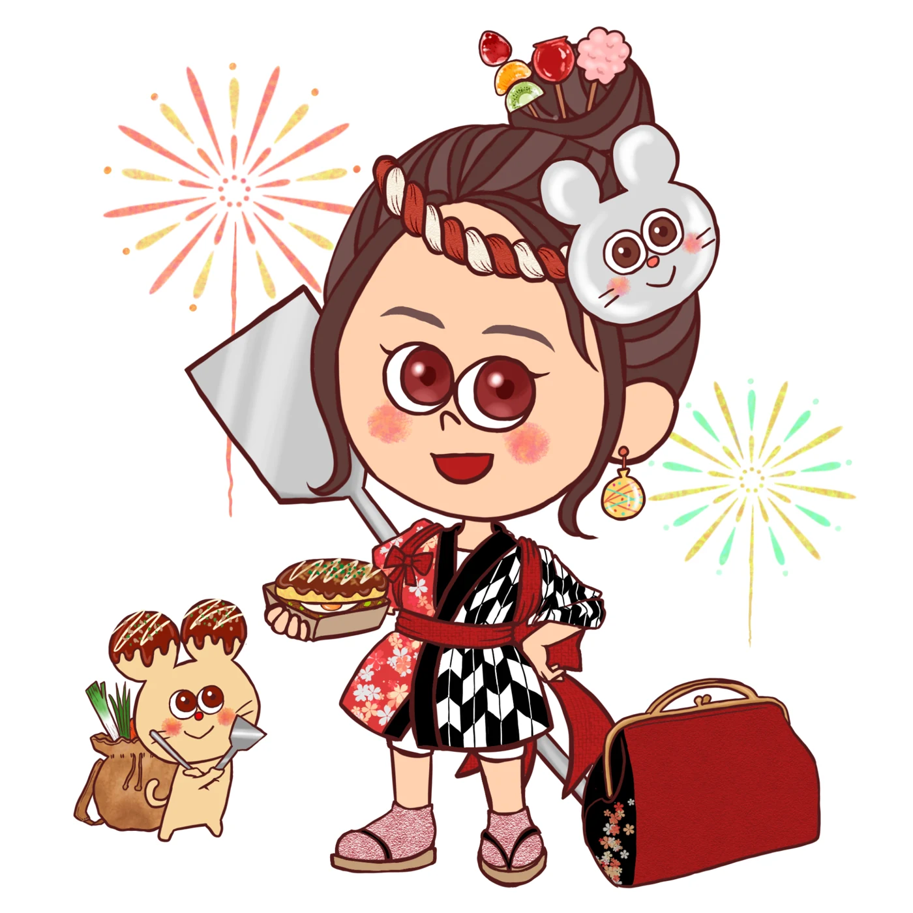

ORIGINAL CHARACTERS
いただきますプリンセス
食べものの国のお姫様と、お供のねずみたち。
お菓子や料理のモチーフを、衣装や小物にちりばめたキャラクターシリーズです。










ORIGINAL CHARACTERS
食べものの国のお姫様と、お供のねずみたち。
お菓子や料理のモチーフを、衣装や小物にちりばめたキャラクターシリーズです。








